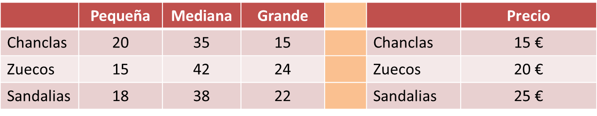

Las siguientes matrices indican el inventario de chanclas, zuecos y sandalias de talla pequeña, mediana y grande de una tienda, y sus precios:

La tienda quiere saber cuánto vale su inventario.
¿Cómo deberíamos configurar la multiplicación de las matrices para determinarlo?
El truco para este tipo de problemas es juntar lo que coincide (chanclas, zuecos y sandalias), que deben estar “en el medio” cuando multipliquemos. De esta manera cuadrarán las dimensiones y tendrá sentido la multiplicación:
Entonces tenemos 1050 € en la talla pequeña, 2315 en la mediana y 1255 en la grande, en total 4620 €
grafos
Un grafo es un conjunto de objetos llamados vértices, conectados entre sí por las aristas.
Si en el grafo representamos con 1 si dos vértices están conectados y con 0 si no lo están. La matriz en la que lo representamos se llama matriz de adyacencia.
Ejemplo:
Un grafo se dice que es dirigido si las aristas están orientadas.
Ejemplo:
Ejercicios.
1.- Una empresa fabrica dos tipos de lavadoras, A y B,con tres acabados diferentes, N, L y S. Del modelo A produce: 400 del acabado N, 200 del L y 50 del S. Del modelo B: 300 del N, 100 del L y 30 del S Tardan 25 horas de fabricación y 1 de administración en fabricar el acabado N, 30 horas de fabricación y 1,2 horas de administración en el L y 33 horas de fabricación y 1,3 de administración en el S.
a) Representa la información en 2 matrices.
b) Encuentra una matriz que indique las horas totales de fabricación y de administración de cada modelo.
2.- Encuentra la matriz de adyacencia de este grafo:
Soluciones
1.-
2.-